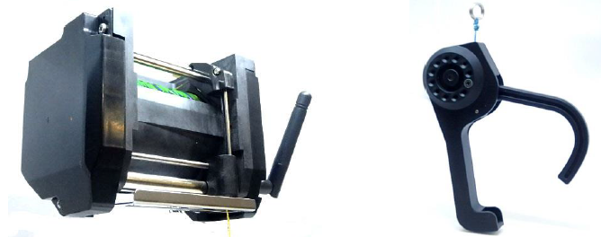
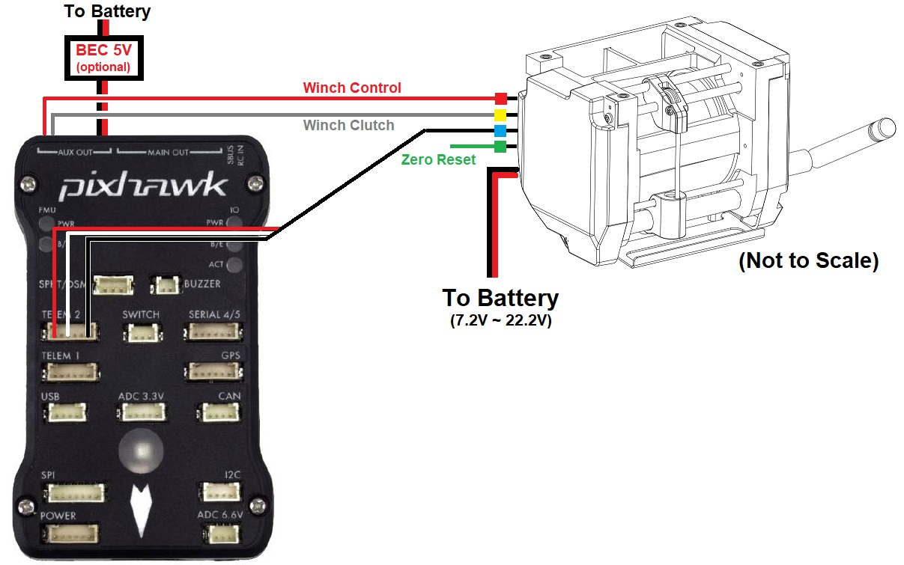

[copywiki destination=”copter”]¶
Daiwa Winch¶
{kind=link}
The Daiwa winch is a high quality winch specially designed for drone delivery. The winch includes a “thread end detector switch” that protects against pulling the line in too tightly and thus straining the device or breaking the thread. The gripper includes a spring mechanism that automatically releases the package when it touches the ground.
Weight: 630g
Size: W:110mm H:82mm D:72mm
Maximum Payload: 8kg
Maximum Power: 55W
Input Voltage: 7.2V ~ 22.2V
Interface: 4xPWM or UART
Designed and manufactured in Japan
Note
The driver for this winch will be released with Copter-4.1.0. For earlier versions the winch can be controlled using the autopilot’s servo outputs which allows the winch to be operated from the pilot’s transmitter and/or from DO_SET_SERVO mission commands
Where To Buy¶
These winches are manufactured by Okaya (japanese site, english site) and can be purchased here (English) or here (Japanese).
Connection and Configuration¶
Connect the winch to the autopilot as shown below
{kind=link}
Connect the 3-pin Winch Control wire (red cable tie) to AUX OUT 1 (aka Servo9)
Connect the 3-pin Winch Clutch wire (yellow cable tie) to AUX OUT 2 (aka Servo10)
Connect the 3-pin Winch Telemetry wire (blue cable tie) to the Autopilot’s Telem2 (or any other telemetry port)
The Zero Reset (green cable tie) used to calibrate the winch should be left disconnected
A 7.2V to 22.2V power supply is required to power the motors
A 5V BEC can optionally be connected to the autopilot’s servo rail to provide power to the winch electronics. This is not required if the Telemetry wire is connected
Set the following parameters
WINCH_TYPE = 2 (Daiwa)
SERVO9_FUNCTION = 88 (Winch)
SERVO9_MIN = 1000
SERVO9_TRIM = 1500
SERVO9_MAX = 2000
SERVO10_FUNCTION = 133 (Winch Clutch)
SERVO10_MIN = 1000
SERVO10_TRIM = 1500
SERVO10_MAX = 2000
SERIAL2_PROTOCOL = 31 (Winch). Note this assumes the Winch’s telemetry is connected to SERIAL2 which is usually TELEM2 on most boards. Note that this does not necessarily correspond to UART2 on some boards.
SERIAL2_BAUD = 38 (38400 baud) or 115 (115200 baud), depending on version of winch.
RC6_OPTION = 45 (Winch Control) to allow controlling the winch speed from the transmitter’s channel 6 knob
RC6_DZ = 30. This deadzone is used to detect whether the pilot has moved the winch control knob to retake control from autonomous operation
RC6_TRIM = The mid value between RC6_MIN and RC6_MAX which is normally close to 1500
RC8_OPTION = 44 (Winch Enable) to allow relaxing the winch by pulling the transmitter’s channel 8 switch low
Controlling during Missions¶
The Winch can be controlled during Autonomous missions using the DO_WINCH mission command.